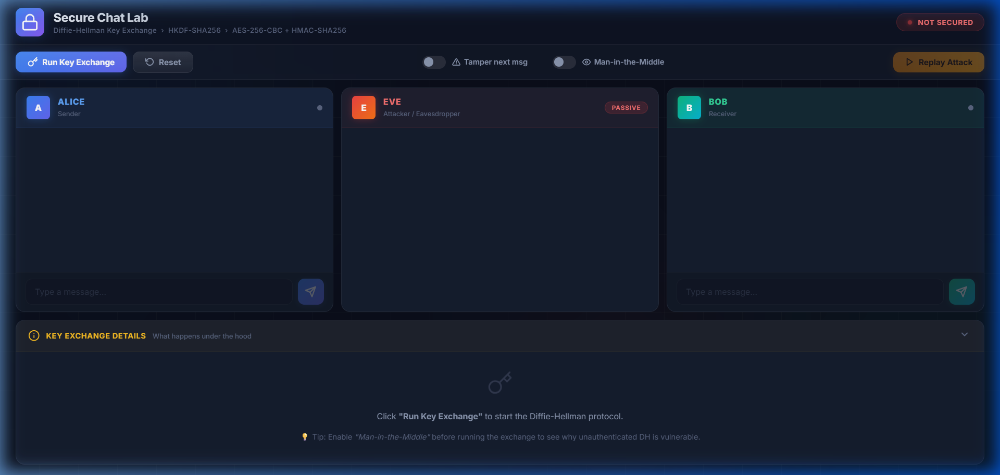
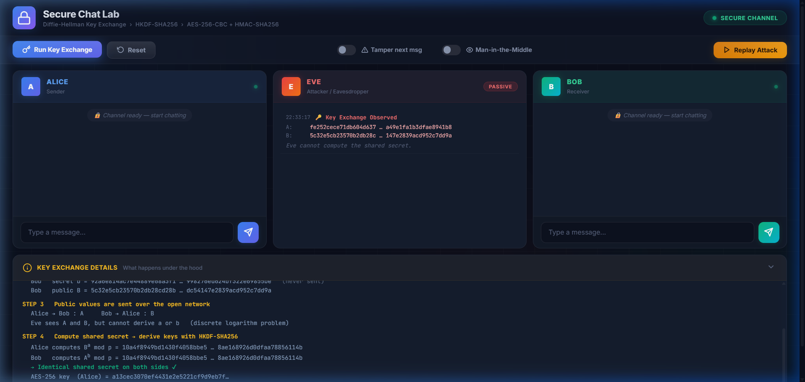
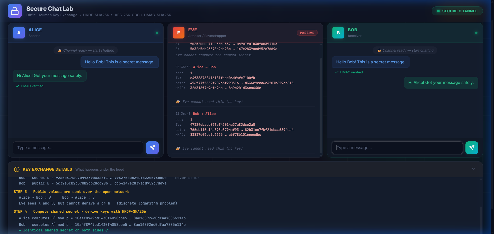
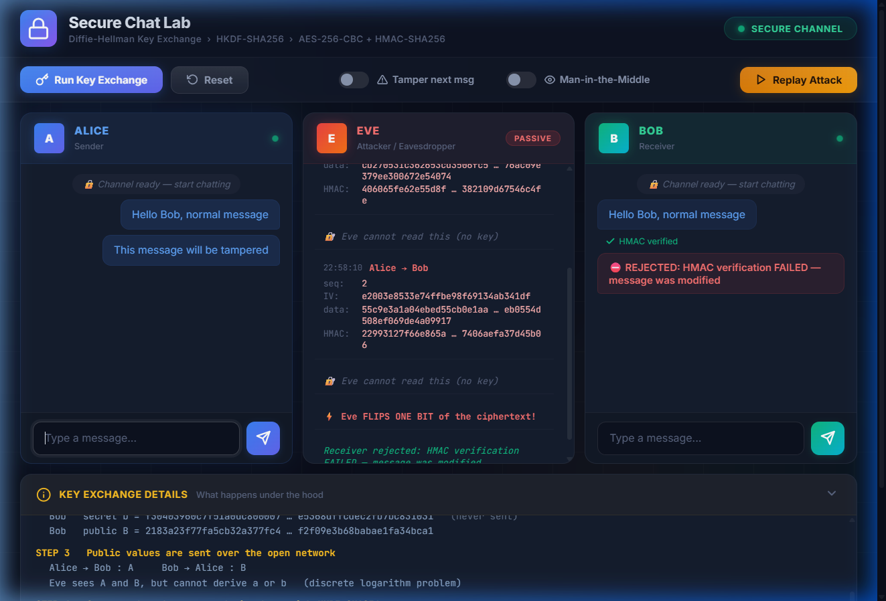
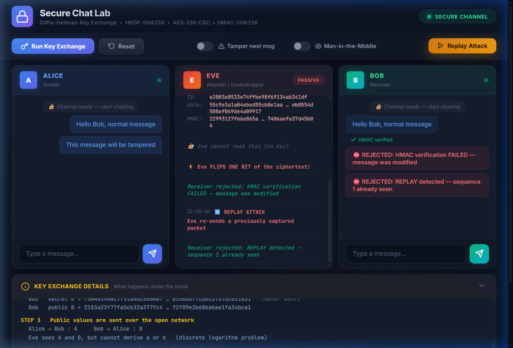
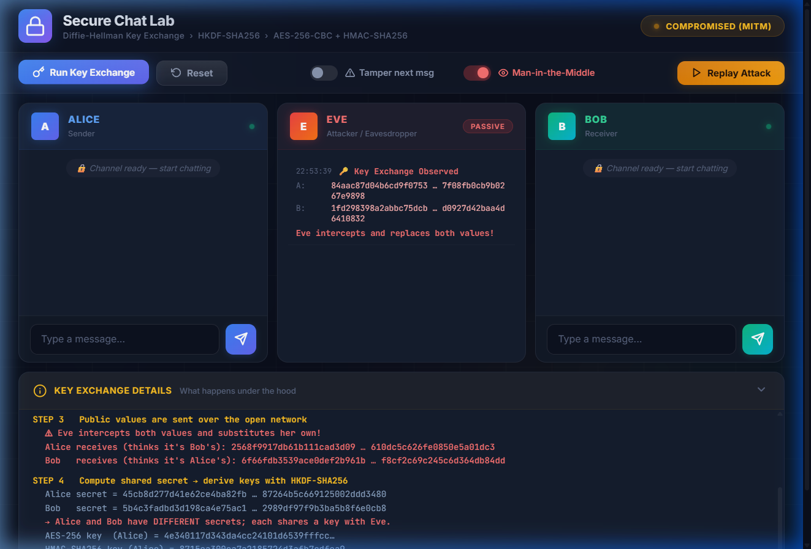
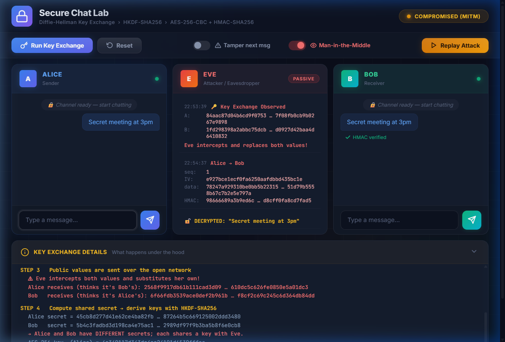

Secure Chat Application using Diffie-Hellman Key Exchange, AES-256-CBC, and HMAC-SHA256 with Real-Time Attack Simulation
In contemporary computer networks, public communication channels are fundamentally untrusted and susceptible to interception, manipulation, and spoofing. This project presents the design, mathematical formalization, and interactive implementation of an end-to-end secure communication system modeling modern transport layer security (TLS 1.3 / Signal Protocol architectures). The system integrates four foundational pillars of modern applied cryptography:
To provide rigorous educational insight and empirical evaluation, the application embeds a real-time, tri-party visual environment containing Alice (sender), Bob (receiver), and Eve (network adversary). Through this platform, four critical adversarial scenarios are demonstrated: passive eavesdropping, ciphertext tampering (single-bit flipping), packet replay attacks, and unauthenticated Diffie-Hellman Man-in-the-Middle (MITM) interception. The implementation has been validated both as a standalone Python application leveraging the Python cryptography primitives and as a zero-dependency web interface utilizing the W3C Web Cryptography API.
The rapid proliferation of networked applications, distributed databases, and real-time messaging services has elevated information security from an operational feature to a critical requirement. Open packet-switched networks inherently expose packets to inspection and unauthorized transformation by intermediate entities, including untrusted routers, ISP tapping, and active adversaries.
Achieving secure communication over an untrusted transmission medium necessitates fulfilling four fundamental security objectives defined by the CIA triad and extended cryptographic principles:
Symmetric ciphers such as AES-256 provide high-throughput, computationally lightweight encryption suitable for bulk data transfer. However, symmetric ciphers suffer from the fundamental Key Distribution Problem: two parties wishing to communicate must securely share a secret key beforehand. Transmitting the key across the open channel nullifies confidentiality.
Conversely, asymmetric (public-key) algorithms solve the key distribution dilemma through mathematically related key pairs but incur substantial computational overhead, rendering them impractical for streaming message encryption.
This project synthesizes asymmetric and symmetric paradigms into a hybrid cryptographic architecture:
The system architecture models two communicating endpoints (Alice and Bob) communicating over a shared, untrusted network wire observed and manipulated by an adversary (Eve). Under the standard Dolev-Yao threat model:
The key exchange operates over the multiplicative group of integers modulo a large safe prime p (2048-bit MODP safe prime), with generator g = 2:
a and computes public key A = g^a mod p.b and computes public key B = g^b mod p.A and B are exchanged across the network.K_shared = B^a mod p = (g^b)^a mod p = g^(ab) mod p.K_shared = A^b mod p = (g^a)^b mod p = g^(ab) mod p.
Due to the Discrete Logarithm Problem (DLP), an eavesdropper observing (p, g, A, B) cannot compute g^(ab) mod p in polynomial time.
Using the shared DH secret directly as an encryption key is cryptographically unsafe because DH outputs are not uniformly distributed. HKDF (RFC 5869) extracts and expands the shared secret into 64 bytes of pseudorandom material:
K_AES = OKM[0..31] (256-bit AES encryption key)K_HMAC = OKM[32..63] (256-bit HMAC authentication key)Plaintext messages are padded according to PKCS#7 (block size 16 bytes). For each transmission, a fresh cryptographically secure 128-bit random IV is generated. The ciphertext blocks are computed as:
C_0 = IV, C_i = E_{K_AES}(P_i ⊕ C_{i-1})
To protect against chosen-ciphertext and padding oracle attacks, the Encrypt-then-MAC (EtM) paradigm is applied. A 64-bit monotonically increasing sequence number (Seq) prevents replay attacks:
Tag = HMAC-SHA256_{K_HMAC}(Seq || IV || Ciphertext)
Wire Packet = Seq (8 bytes) || IV (16 bytes) || Ciphertext (N bytes) || Tag (32 bytes)
Seq || IV || Ciphertext. If verification fails, drop packet immediately. Decryption is never attempted on untampered data.Seq > Recv_Seq. If Seq ≤ Recv_Seq, abort with Replay Detected.K_AES and IV, remove PKCS#7 padding, and deliver message.






Below is the complete, self-contained Python source code (secure_chat_lab.py) implementing the cryptographic protocol and interactive Tkinter GUI:
"""
Secure Chat Lab - Cryptography and Network Security (ICS412) project
-----------------------------------------------------------------------
Interactive GUI that simulates Alice, Bob and an attacker (Eve) on one screen.
* Diffie-Hellman key exchange (RFC 3526, 2048-bit group)
* HKDF-SHA256 key derivation (separate AES key and HMAC key)
* AES-256-CBC encryption (PKCS7 padding, random IV per message)
* HMAC-SHA256 integrity (encrypt-then-MAC, includes sequence number)
* Attacks you can switch on: eavesdropping, tampering, replay,
man-in-the-middle (unauthenticated DH)
Requirements: pip install cryptography (tkinter ships with Python)
Run: python secure_chat_lab.py
"""
import os
import struct
import time
import tkinter as tk
from tkinter import ttk
from cryptography.hazmat.primitives import hashes, hmac, padding
from cryptography.hazmat.primitives.asymmetric import dh
from cryptography.hazmat.primitives.ciphers import Cipher, algorithms, modes
from cryptography.hazmat.primitives.kdf.hkdf import HKDF
from cryptography.exceptions import InvalidSignature
# ----------------------------------------------------------------------------
# 1. CRYPTO CORE
# ----------------------------------------------------------------------------
# RFC 3526 group 14 (2048-bit MODP safe prime), generator g = 2
P_HEX = (
"FFFFFFFFFFFFFFFFC90FDAA22168C234C4C6628B80DC1CD129024E088A67CC74"
"020BBEA63B139B22514A08798E3404DDEF9519B3CD3A431B302B0A6DF25F1437"
"4FE1356D6D51C245E485B576625E7EC6F44C42E9A637ED6B0BFF5CB6F406B7ED"
"EE386BFB5A899FA5AE9F24117C4B1FE649286651ECE45B3DC2007CB8A163BF05"
"98DA48361C55D39A69163FA8FD24CF5F83655D23DCA3AD961C62F356208552BB"
"9ED529077096966D670C354E4ABC9804F1746C08CA18217C32905E462E36CE3B"
"E39E772C180E86039B2783A2EC07A28FB5C55DF06F4C52C9DE2BCBF695581718"
"3995497CEA956AE515D2261898FA051015728E5A8AACAA68FFFFFFFFFFFFFFFF"
)
P = int(P_HEX, 16)
G = 2
PARAMS = dh.DHParameterNumbers(P, G).parameters()
class Keys:
"""AES key + HMAC key derived from one shared secret."""
def __init__(self, shared_secret: bytes):
okm = HKDF(hashes.SHA256(), 64, salt=None,
info=b"secure-chat-lab").derive(shared_secret)
self.aes_key, self.mac_key = okm[:32], okm[32:]
self.send_seq = 0 # next sequence number to send
self.recv_seq = 0 # highest sequence number accepted
def encrypt_message(keys: Keys, text: str) -> bytes:
"""packet = seq(8) | iv(16) | ciphertext | hmac(32)"""
keys.send_seq += 1
seq = struct.pack(">Q", keys.send_seq)
iv = os.urandom(16)
padder = padding.PKCS7(128).padder()
padded = padder.update(text.encode()) + padder.finalize()
enc = Cipher(algorithms.AES(keys.aes_key), modes.CBC(iv)).encryptor()
ct = enc.update(padded) + enc.finalize()
h = hmac.HMAC(keys.mac_key, hashes.SHA256())
h.update(seq + iv + ct)
return seq + iv + ct + h.finalize()
def decrypt_message(keys: Keys, packet: bytes, check_replay=True) -> str:
"""Verify HMAC first, then replay check, then decrypt.
Raises ValueError with a readable reason on failure."""
if len(packet) < 8 + 16 + 16 + 32:
raise ValueError("packet too short")
seq, iv, ct, tag = packet[:8], packet[8:24], packet[24:-32], packet[-32:]
h = hmac.HMAC(keys.mac_key, hashes.SHA256())
h.update(seq + iv + ct)
try:
h.verify(tag)
except InvalidSignature:
raise ValueError("HMAC verification FAILED - message was modified")
n = struct.unpack(">Q", seq)[0]
if check_replay and n <= keys.recv_seq:
raise ValueError(f"REPLAY detected - sequence {n} already seen")
dec = Cipher(algorithms.AES(keys.aes_key), modes.CBC(iv)).decryptor()
padded = dec.update(ct) + dec.finalize()
unpadder = padding.PKCS7(128).unpadder()
text = unpadder.update(padded) + unpadder.finalize()
if check_replay:
keys.recv_seq = n
return text.decode()
class Party:
"""One side of the conversation (Alice, Bob or Eve's fake identities)."""
def __init__(self, name):
self.name = name
self.priv = PARAMS.generate_private_key()
self.x = self.priv.private_numbers().x
self.y = self.priv.public_key().public_numbers().y # public value
self.keys = None
def compute_shared(self, peer_y: int) -> bytes:
peer = dh.DHPublicNumbers(peer_y, PARAMS.parameter_numbers()).public_key()
secret = self.priv.exchange(peer)
self.keys = Keys(secret)
return secret
def short(n, width=24):
s = format(n, "x") if isinstance(n, int) else n.hex()
return s if len(s) <= 2 * width else s[:width] + " ... " + s[-width:]
# ----------------------------------------------------------------------------
# 2. GUI INTERFACE
# ----------------------------------------------------------------------------
BG, PANEL, FG = "#10151f", "#182030", "#e6edf7"
ALICE_C, BOB_C, EVE_C = "#4da3ff", "#4cd18a", "#ff6b6b"
MONO = ("Consolas", 10)
class App(tk.Tk):
def __init__(self):
super().__init__()
self.title("Secure Chat Lab - Diffie-Hellman + AES + HMAC")
self.geometry("1280x800")
self.configure(bg=BG)
self.minsize(1100, 700)
self.alice = self.bob = None
self.eve_a = self.eve_b = None # Eve's identities in MITM mode
self.mitm_active = False
self.ready = False
self.last_packet = None # (sender, packet) for replay
self.var_tamper = tk.BooleanVar(value=False)
self.var_mitm = tk.BooleanVar(value=False)
self.var_show_key = tk.BooleanVar(value=True)
self._build_ui()
self.log_key("Welcome! Click 'Run Key Exchange' to start.\n"
"Tip: tick 'Man-in-the-middle' BEFORE running the exchange "
"to see why plain Diffie-Hellman is not enough.")
def _build_ui(self):
top = tk.Frame(self, bg=BG)
top.pack(fill="x", padx=12, pady=(10, 4))
tk.Label(top, text="Secure Chat Lab", bg=BG, fg=FG,
font=("Segoe UI", 18, "bold")).pack(side="left")
tk.Label(top, text=" DH key exchange > HKDF > AES-256-CBC + HMAC-SHA256",
bg=BG, fg="#8fa3bf", font=("Segoe UI", 10)).pack(side="left")
ctl = tk.Frame(self, bg=PANEL)
ctl.pack(fill="x", padx=12, pady=6)
self.btn_kx = self._btn(ctl, "1. Run Key Exchange", self.start_key_exchange, "#2f6fed")
self.btn_kx.pack(side="left", padx=8, pady=8)
self._btn(ctl, "Reset", self.reset, "#555d70").pack(side="left", padx=4)
self._chk(ctl, "Attacker tampers with next message", self.var_tamper).pack(side="left", padx=14)
self._chk(ctl, "Man-in-the-middle (set before key exchange)", self.var_mitm).pack(side="left", padx=6)
self.btn_replay = self._btn(ctl, "Replay last packet", self.replay, "#b9770e")
self.btn_replay.pack(side="right", padx=8)
main = tk.Frame(self, bg=BG)
main.pack(fill="both", expand=True, padx=12, pady=4)
for c in range(3):
main.columnconfigure(c, weight=1, uniform="col")
main.rowconfigure(0, weight=1)
self.alice_chat, self.alice_entry = self._chat_panel(main, 0, "ALICE", ALICE_C, self.send_alice)
self.eve_log = self._log_panel(main, 1, "EVE (attacker on the network)", EVE_C)
self.bob_chat, self.bob_entry = self._chat_panel(main, 2, "BOB", BOB_C, self.send_bob)
bottom = tk.Frame(self, bg=PANEL)
bottom.pack(fill="both", padx=12, pady=(4, 10))
head = tk.Frame(bottom, bg=PANEL)
head.pack(fill="x")
tk.Label(head, text="KEY EXCHANGE DETAILS (what happens under the hood)",
bg=PANEL, fg="#ffd166", font=("Segoe UI", 10, "bold")).pack(side="left", padx=8, pady=4)
self.status = tk.Label(head, text="NOT SECURED", bg="#7a1f1f", fg="white",
font=("Segoe UI", 9, "bold"), padx=10)
self.status.pack(side="right", padx=8, pady=4)
self.key_log = tk.Text(bottom, height=11, bg="#0b0f17", fg="#cfe3ff",
font=MONO, wrap="word", relief="flat")
self.key_log.pack(fill="both", padx=8, pady=(0, 8))
self.key_log.tag_config("step", foreground="#ffd166", font=("Consolas", 10, "bold"))
self.key_log.tag_config("ok", foreground="#4cd18a")
self.key_log.tag_config("bad", foreground="#ff6b6b")
self._set_inputs(False)
def _btn(self, parent, text, cmd, color):
return tk.Button(parent, text=text, command=cmd, bg=color, fg="white",
activebackground=color, relief="flat", padx=12, pady=5,
font=("Segoe UI", 10, "bold"), cursor="hand2")
def _chk(self, parent, text, var):
return tk.Checkbutton(parent, text=text, variable=var, bg=PANEL, fg=FG,
selectcolor="#0b0f17", activebackground=PANEL,
activeforeground=FG, font=("Segoe UI", 10))
def _chat_panel(self, parent, col, title, color, send_cmd):
f = tk.Frame(parent, bg=PANEL)
f.grid(row=0, column=col, sticky="nsew", padx=5, pady=4)
tk.Label(f, text=title, bg=color, fg="#06101c",
font=("Segoe UI", 11, "bold")).pack(fill="x")
txt = tk.Text(f, bg="#0b0f17", fg=FG, font=("Segoe UI", 10), wrap="word",
relief="flat", state="disabled", padx=8, pady=8)
txt.pack(fill="both", expand=True, padx=6, pady=6)
txt.tag_config("me", foreground=color)
txt.tag_config("them", foreground="#e6edf7")
txt.tag_config("sys", foreground="#8fa3bf", font=("Segoe UI", 9, "italic"))
txt.tag_config("bad", foreground="#ff6b6b", font=("Segoe UI", 10, "bold"))
row = tk.Frame(f, bg=PANEL)
row.pack(fill="x", padx=6, pady=(0, 8))
ent = tk.Entry(row, bg="#0b0f17", fg=FG, insertbackground=FG, relief="flat",
font=("Segoe UI", 11))
ent.pack(side="left", fill="x", expand=True, ipady=5)
ent.bind("", lambda e: send_cmd())
tk.Button(row, text="Send", command=send_cmd, bg=color, fg="#06101c",
relief="flat", font=("Segoe UI", 10, "bold"), padx=12).pack(side="left", padx=(6, 0))
return txt, ent
def _log_panel(self, parent, col, title, color):
f = tk.Frame(parent, bg=PANEL)
f.grid(row=0, column=col, sticky="nsew", padx=5, pady=4)
tk.Label(f, text=title, bg=color, fg="#06101c",
font=("Segoe UI", 11, "bold")).pack(fill="x")
txt = tk.Text(f, bg="#0b0f17", fg="#ffb3b3", font=("Consolas", 9), wrap="char",
relief="flat", state="disabled", padx=8, pady=8)
txt.pack(fill="both", expand=True, padx=6, pady=6)
txt.tag_config("head", foreground="#ff6b6b", font=("Consolas", 9, "bold"))
txt.tag_config("plain", foreground="#ffd166", font=("Consolas", 10, "bold"))
txt.tag_config("sys", foreground="#8fa3bf")
txt.tag_config("ok", foreground="#4cd18a")
return txt
def _append(self, widget, text, tag=None):
widget.configure(state="normal")
widget.insert("end", text, tag)
widget.see("end")
widget.configure(state="disabled")
def log_key(self, text, tag=None):
self.key_log.insert("end", text + "\n", tag)
self.key_log.see("end")
def _set_inputs(self, on):
st = "normal" if on else "disabled"
self.alice_entry.configure(state=st)
self.bob_entry.configure(state=st)
self.btn_replay.configure(state=st)
def set_status(self, text, color):
self.status.configure(text=text, bg=color)
def start_key_exchange(self):
self.reset(silent=True)
self.btn_kx.configure(state="disabled")
self.mitm_active = self.var_mitm.get()
self.key_log.delete("1.0", "end")
steps = [self._kx1, self._kx2, self._kx3, self._kx4, self._kx5]
for i, s in enumerate(steps):
self.after(700 * i, s)
def _kx1(self):
self.log_key("STEP 1 Public parameters (known to everyone, including Eve)", "step")
self.log_key(f" p = {short(P)} (2048-bit safe prime, RFC 3526)")
self.log_key(" g = 2")
self.alice, self.bob = Party("Alice"), Party("Bob")
if self.mitm_active:
self.eve_a, self.eve_b = Party("Eve-as-Bob"), Party("Eve-as-Alice")
def _kx2(self):
self.log_key("\nSTEP 2 Each side picks a SECRET number and computes a PUBLIC value (g^x mod p)", "step")
self.log_key(f" Alice secret a = {short(self.alice.x)} (never sent)")
self.log_key(f" Alice public A = {short(self.alice.y)}")
self.log_key(f" Bob secret b = {short(self.bob.x)} (never sent)")
self.log_key(f" Bob public B = {short(self.bob.y)}")
def _kx3(self):
self.log_key("\nSTEP 3 Public values are sent over the open network", "step")
if self.mitm_active:
self.log_key(" !! Eve intercepts both values and substitutes her own !!", "bad")
self.log_key(f" Alice receives (thinks it is Bob's): {short(self.eve_a.y)}", "bad")
self.log_key(f" Bob receives (thinks it is Alice's): {short(self.eve_b.y)}", "bad")
else:
self.log_key(" Alice -> Bob : A Bob -> Alice : B")
self.log_key(" Eve sees A and B, but cannot get a or b (discrete logarithm problem).")
self._append(self.eve_log, "[key exchange] public values observed:\n", "head")
self._append(self.eve_log, f" A = {short(self.alice.y, 16)}\n B = {short(self.bob.y, 16)}\n\n", "sys")
def _kx4(self):
self.log_key("\nSTEP 4 Each side computes the shared secret and derives keys with HKDF-SHA256", "step")
if self.mitm_active:
s_a = self.alice.compute_shared(self.eve_a.y)
s_b = self.bob.compute_shared(self.eve_b.y)
self.eve_a.compute_shared(self.alice.y)
self.eve_b.compute_shared(self.bob.y)
self.log_key(f" Alice secret = {short(s_a)}")
self.log_key(f" Bob secret = {short(s_b)}")
self.log_key(" -> Alice and Bob have DIFFERENT secrets; each one shares a key with Eve.", "bad")
else:
s_a = self.alice.compute_shared(self.bob.y)
s_b = self.bob.compute_shared(self.alice.y)
self.log_key(f" Alice computes B^a mod p = {short(s_a)}")
self.log_key(f" Bob computes A^b mod p = {short(s_b)}")
self.log_key(" -> Identical shared secret on both sides." if s_a == s_b else " MISMATCH", "ok")
self.log_key(f" AES-256 key (Alice) = {self.alice.keys.aes_key.hex()[:32]}...")
self.log_key(f" HMAC key (Alice) = {self.alice.keys.mac_key.hex()[:32]}...")
def _kx5(self):
self.ready = True
self._set_inputs(True)
self.btn_kx.configure(state="normal")
if self.mitm_active:
self.set_status("COMPROMISED (MITM)", "#b9770e")
self.log_key("\nDONE Channel looks secure to Alice and Bob, but Eve reads everything.\n"
" Fix: authenticate the public values (RSA signatures / certificates, as in TLS).", "bad")
else:
self.set_status("SECURE CHANNEL", "#1f7a4a")
self.log_key("\nDONE Secure channel established. Try sending messages!", "ok")
for w in (self.alice_chat, self.bob_chat):
self._append(w, "-- channel ready --\n", "sys")
def send_alice(self):
self._send(self.alice, self.bob, self.alice_entry, self.alice_chat,
self.bob_chat, self.eve_a, "Alice")
def send_bob(self):
self._send(self.bob, self.alice, self.bob_entry, self.bob_chat,
self.alice_chat, self.eve_b, "Bob")
def _send(self, sender, receiver, entry, my_chat, their_chat, eve_ident, name):
if not self.ready:
return
text = entry.get().strip()
if not text:
return
entry.delete(0, "end")
self._append(my_chat, f"You: {text}\n", "me")
packet = encrypt_message(sender.keys, text)
self._append(self.eve_log, f"[{time.strftime('%H:%M:%S')}] {name} -> "
f"{'Bob' if name == 'Alice' else 'Alice'}\n", "head")
self._show_packet(packet)
if self.mitm_active:
plain = decrypt_message(eve_ident.keys, packet, check_replay=False)
self._append(self.eve_log, f" >>> DECRYPTED BY EVE: \"{plain}\"\n\n", "plain")
other = self.eve_b if eve_ident is self.eve_a else self.eve_a
if self.var_tamper.get():
plain += " [edited by Eve]"
self.var_tamper.set(False)
self._append(self.eve_log, " Eve edits the message before forwarding!\n\n", "head")
packet = encrypt_message(other.keys, plain)
else:
self._append(self.eve_log, " Eve cannot read this (no key).\n\n", "sys")
if self.var_tamper.get():
packet = self._tamper(packet)
self.var_tamper.set(False)
self._deliver(receiver, their_chat, packet)
def _show_packet(self, packet):
iv, ct, tag = packet[8:24], packet[24:-32], packet[-32:]
n = struct.unpack(">Q", packet[:8])[0]
self._append(self.eve_log, f" seq : {n}\n IV : {iv.hex()}\n"
f" data: {ct.hex()}\n HMAC: {tag.hex()[:32]}...\n")
def _tamper(self, packet):
b = bytearray(packet)
b[26] ^= 0x01
self._append(self.eve_log, " Eve FLIPS ONE BIT of the ciphertext in transit!\n\n", "head")
return bytes(b)
def _deliver(self, receiver, chat, packet):
try:
text = decrypt_message(receiver.keys, packet)
self._append(chat, f"Them: {text}\n", "them")
self.last_packet = (receiver, chat, packet)
self._append(chat, " (HMAC verified)\n", "sys")
except ValueError as e:
self._append(chat, f"REJECTED: {e}\n", "bad")
self._append(self.eve_log, f" Receiver rejected packet: {e}\n\n", "sys")
def replay(self):
if not self.last_packet:
return
receiver, chat, packet = self.last_packet
self._append(self.eve_log, "[REPLAY ATTACK] Eve re-sends a captured packet\n", "head")
self._deliver(receiver, chat, packet)
def reset(self, silent=False):
self.ready = False
self.alice = self.bob = self.eve_a = self.eve_b = None
self.last_packet = None
self.var_tamper.set(False)
for w in (self.alice_chat, self.bob_chat, self.eve_log):
w.configure(state="normal"); w.delete("1.0", "end"); w.configure(state="disabled")
self._set_inputs(False)
self.set_status("NOT SECURED", "#7a1f1f")
self.btn_kx.configure(state="normal")
if not silent:
self.key_log.delete("1.0", "end")
self.log_key("Reset. Click 'Run Key Exchange' to start again.")
if __name__ == "__main__":
App().mainloop()